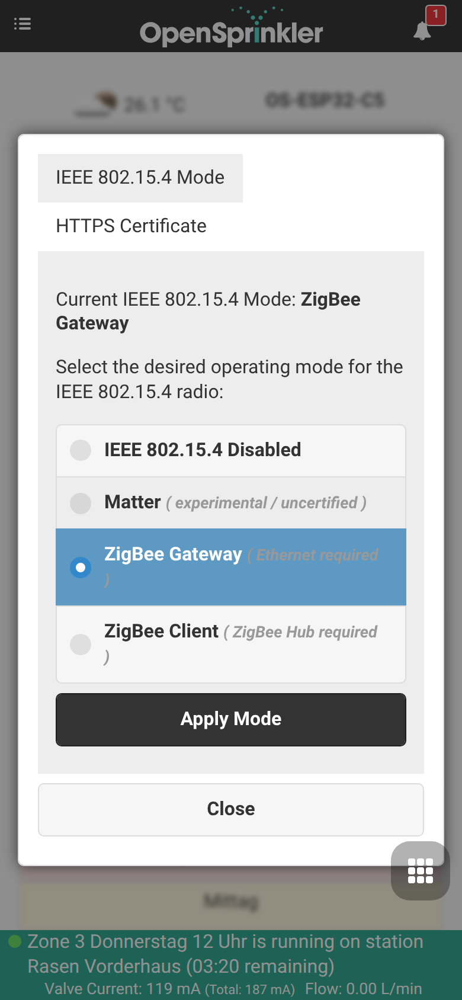
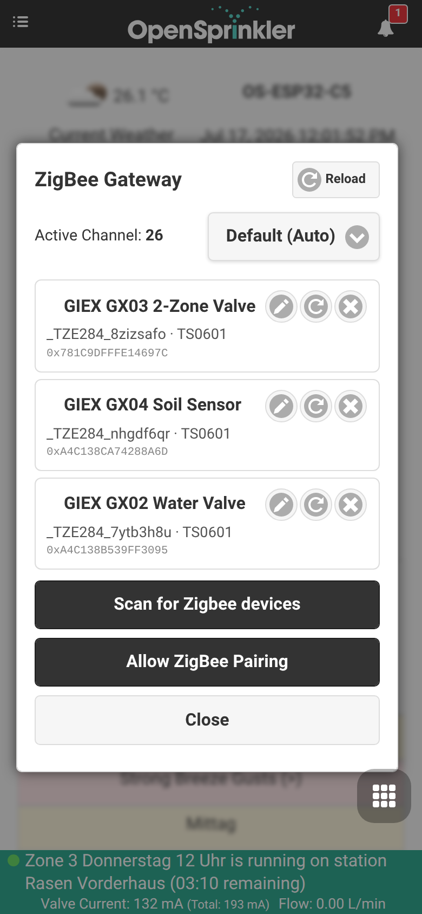
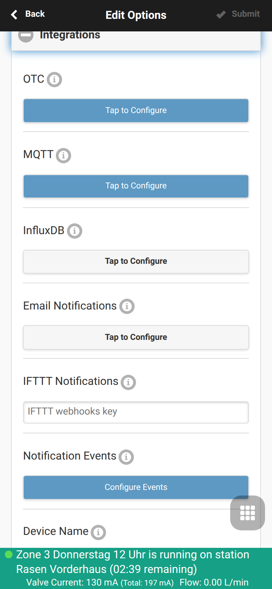
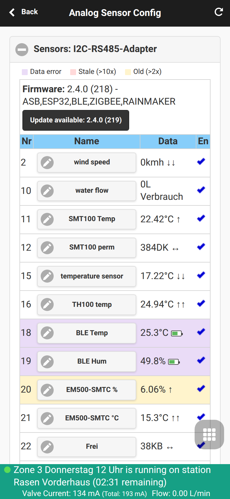
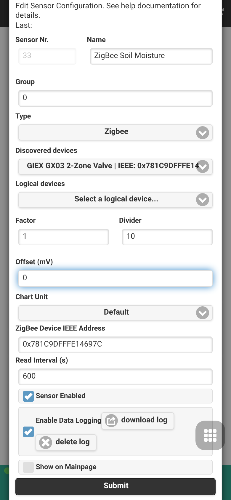
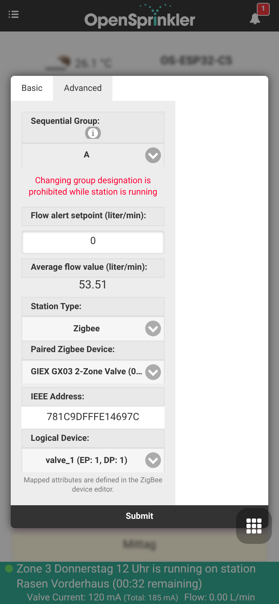

Zigbee Gateway Integration
OpenSprinklerPro features native Zigbee coordination capabilities directly on the ESP32-C5 board. The ESP32-C5 single-chip solution supports 2.4 GHz dual-band Wi-Fi 6, Bluetooth 5 (LE), and 802.15.4 (Zigbee 3.0 / Thread).
Using the Zigbee variant of the firmware, your OpenSprinkler controller functions as a full-fledged Zigbee Coordinator. It can pair with home automation sensors, smart valves, soil moisture probes, and temperature monitors to adjust your watering schedules based on real-time local conditions.
📸 Guided Setup Workflow
This step-by-step workflow guide demonstrates how to configure the radio mode, pair Zigbee devices, and map their attributes to analog sensors.
Step 1: Radio Mode Configuration
First, verify that your ESP32-C5 controller is set to the correct radio mode. By default, the ESP32-C5 can run in several modes. Access the mode settings via the side menu under Setup ESP32 Mode.

To use Zigbee, enable Zigbee Gateway / Coordinator mode. This initializes the native 802.15.4 radio for Zigbee channel management, device routing, and network formation.
Step 2: Device Joining & Pairing
Once Zigbee mode is active, you can access the ZigBee Gateway page from the side menu. This page allows you to control the pairing window and manage registered physical devices.

- Click Permit Join (typically 60 seconds) to open the network for new devices.
- Put your Zigbee device (e.g. GIEX smart valve, Tuya soil sensor, or Xiaomi temperature sensor) into pairing mode (usually by holding its pairing button for 5 seconds).
- The device will be detected, assigned a short address, and display its IEEE 64-bit address, device type, and connection quality.
Step 3 (optional): External Integrations
This step is optional and is not required for Zigbee stations or sensors to work. Open Edit Options → Integrations only if you want to forward your data to external systems: publish sensor readings and valve states over MQTT, log them to InfluxDB, enable cloud remote access with OpenThings Cloud (OTC), or send Email / IFTTT notifications for controller events.

Step 4: Multi-Sensor and Calibration Configuration
To use the sensor data for program adjustments, navigate to Analog Sensor Configuration from the footer menu. This dashboard displays all active logical sensors, their physical bindings, and battery status.

Step 5: Adding/Editing a Zigbee Sensor
Click Add Sensor (or edit an existing one) to map a specific Zigbee device attribute (such as soil moisture percentage or temperature) to an analog sensor slot.

In this editor, you can: - Assign the sensor a recognizable Name. - Choose the Sensor Type (e.g., Moisture, Temperature, Battery, etc.). - Select the Source Device from the dropdown of paired Zigbee nodes. - Define custom calibration offsets and threshold triggers.
💧 GIEX Smart Valves & Zone Control
Beyond reading sensors, OpenSprinklerPro can drive battery-powered GIEX Zigbee valves directly as irrigation zones (stations). Each valve outlet is mapped to a station and is opened and closed wirelessly by the controller — no 24 VAC wiring, solenoids or valve boxes are required.
What makes these valves special
- Wireless & battery-powered – the valve runs on internal batteries and communicates over Zigbee, so a zone can be placed anywhere within range of the coordinator.
- Tuya smart-valve platform – GIEX valves expose their functions as Tuya data points (DPs): on/off control, countdown timer, cyclic/duration irrigation and, on metered models, water-flow and volume telemetry.
- Multi-zone in a single device – one physical GX03 provides two fully independent outlets, so a single paired device yields two separate OpenSprinkler zones.
- Battery reporting – the remaining battery percentage is shown directly on the station card in the dashboard.
The GIEX product family
| Model | Type | Outlets / logical devices | Typical use |
|---|---|---|---|
| GX02 | Single smart water valve | 1 valve (valve_1, DP 1) |
One wireless irrigation zone |
| GX03 | 2-zone smart water valve | 2 valves (valve_1 = DP 1, valve_2 = DP 2) |
Two independent wireless zones from a single device |
| GX04 | Soil moisture & temperature sensor | Soil moisture + temperature | Moisture-based program adjustments (used as an analog sensor, see Step 5 above) |
Once paired, all of these devices are listed together on the ZigBee Gateway page with their friendly name, manufacturer/model and 64-bit IEEE address:
How they work with OpenSprinkler
When a valve is used as a Zigbee station, the controller acts as the Zigbee coordinator and translates every station run into an on/off (or Tuya DP) command sent to the correct valve outlet:
- A paired device is identified by its 64-bit IEEE address.
- A logical device selects the individual outlet inside that device — e.g.
valve_1 (EP: 1, DP: 1)orvalve_2 (EP: 1, DP: 2)for the two zones of a GX03. - Starting the station opens the valve; runtime, program schedules, sequential groups, rain/sensor delays and manual control all behave exactly like a wired zone.
This is different from the sensor mapping in Step 5: a sensor reads data for program adjustments, whereas a Zigbee station actively controls a valve.
Setting up a GIEX valve as a zone
- Pair the valve on the ZigBee Gateway page (see Step 2 above). The GIEX device appears with its friendly name and IEEE address.
- On the dashboard, open the station settings (the gear icon on the zone card) and switch to the Advanced tab.
- Set Station Type to Zigbee.
- Choose the Paired Zigbee Device (e.g. GIEX GX03 2-Zone Valve). The IEEE Address is filled in automatically.
- Select the Logical Device for the outlet this station should control —
valve_1for the first zone,valve_2for the second.

- Press Submit. The station now opens and closes the selected GIEX valve outlet wirelessly whenever it runs.
For a two-zone GX03, repeat the steps for a second station and select valve_2, so both outlets are controlled independently.
Platform availability
Zigbee stations and the GIEX zone function require the ESP32-C5 controller running the Zigbee firmware variant. They are not available on ESP8266 or OSPi builds.
🛠️ Supported Devices and Technical Details
The internal firmware supports standard Zigbee 3.0 clusters: - 0x0402: Temperature Measurement (Tuya, Xiaomi, Sonoff) - 0x0405: Relative Humidity / Soil Moisture (GIEX, Tuya, Moes) - 0x0001: Power Configuration (Battery percentage reporting)
Multi-Channel Device Mapping
When utilizing complex multi-channel smart valves (like the GIEX GX02 dual-outlet irrigation valve), the coordinator splits individual valve states and telemetry channels into distinct sub-devices. This ensures each zone can be triggered or scaled independently.
Radio Coexistence
The ESP32-C5 manages BLE scans, Wi-Fi 6 traffic, and Zigbee 802.15.4 packages simultaneously. During BLE sensor scans, the Zigbee Packet Traffic Arbitration (PTA) protocol momentarily lowers the priority of Zigbee endpoints to avoid radio collisions and packet loss, restoring full priority instantly when active scanning pauses.